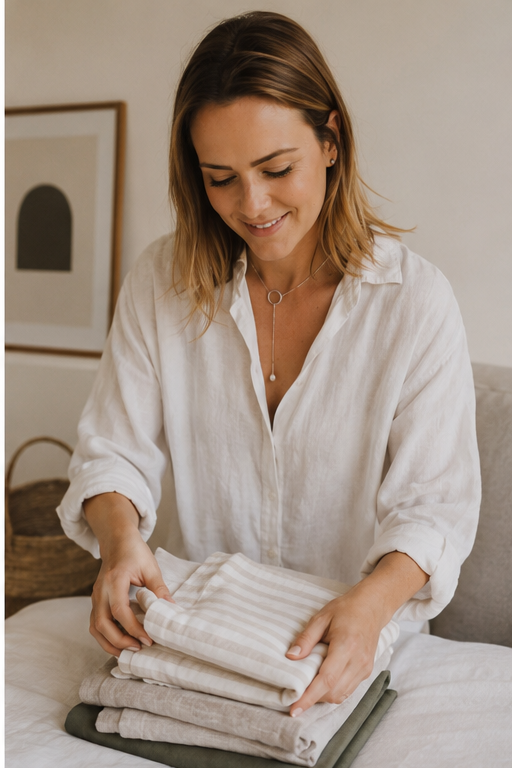
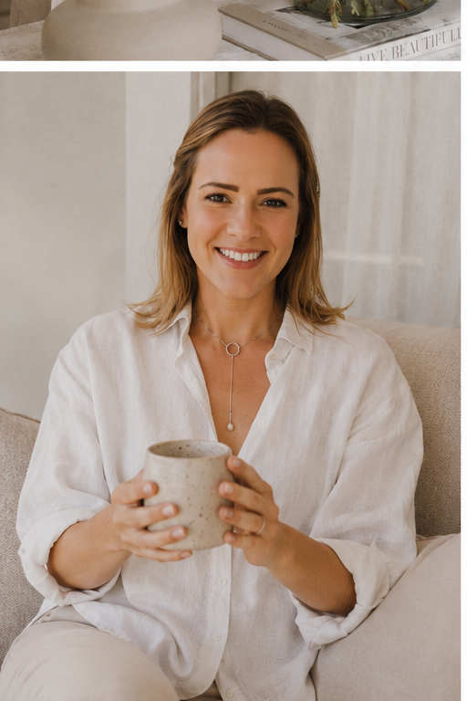
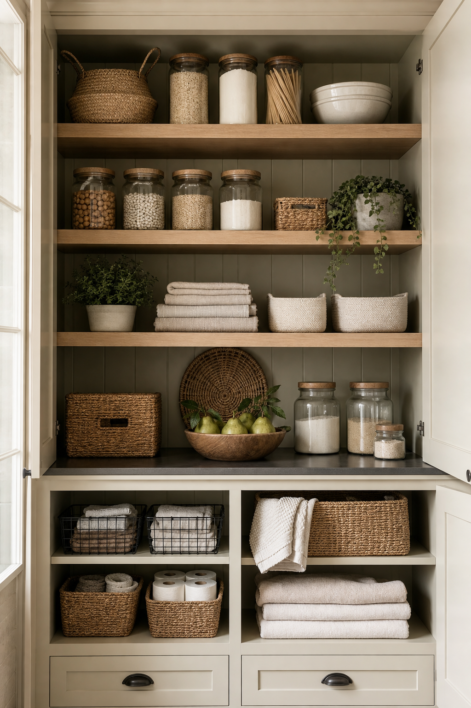
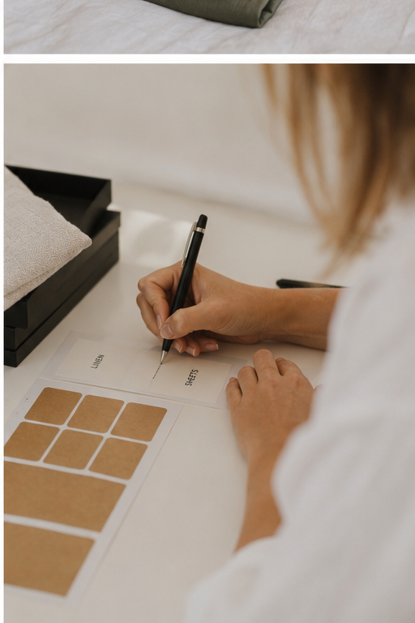

Wardrobes
Seasonal edits, refined categories, folding systems and considered placement for daily ease.
Cape Town home organising and interior editing
For the cupboards, rooms and rituals that need less noise, more intention, and a quieter kind of beauty.
The philosophy
Edited Living creates calm, functional systems that disappear beautifully into the way you already live. We refine what stays, place it with care, and build simple rhythms that keep your home feeling lighter long after the session is done.
Seasonal edits, refined categories, folding systems and considered placement for daily ease.
Pantries, prep zones and cupboards reset with soft structure and beautiful practicality.
Room-by-room editing for families, moves, renovations and homes that need a fresh start.


About Jess
Jess founded Edited Living for people who want a home that feels beautiful without becoming precious. Her approach is gentle, discreet and deeply practical: less about forcing minimalism, more about creating space for the life already unfolding inside your home.
Every project begins with listening. What feels heavy? What gets used every day? What deserves to be seen, and what can quietly support the background of your life?
Services
Choose a focused reset or a fuller home edit. Every service is tailored after a consultation.
A refined reset for one priority space: pantry, wardrobe, playroom, linen cupboard, bathroom or home office.
From enquiryA multi-space transformation for homes that need a considered new rhythm across daily living zones.
By consultationUnpack, place, edit and settle into a new home with calm systems from the first week.
Custom quoteProcess
We begin with a quiet consultation and visual audit of your space.
Jess edits, categorises and designs a system around your real routines.
Your space is styled back with calm placement, labels and final touches.
Transformations

Client journey
Most clients begin with one space that feels impossible to keep tidy. The work is to remove what no longer belongs, make the essentials beautiful to reach, and leave behind a system that does not need constant effort.
“Jess made our kitchen feel twice as spacious, but still like us. Nothing feels clinical. It just finally works.”
Private client, Constantia
“The wardrobe edit changed my mornings. I can see what I own, and getting dressed feels calm again.”
Private client, Sea Point
Enquiries
Tell us a little about your home, your timing and what you would love to feel different. Jess will respond with next steps for a private consultation.

No. The starting point is part of the work. Jess will guide the edit gently and practically.
Only where they genuinely improve the system. The priority is always thoughtful placement first.
Each home is different, so pricing is shared after a short consultation and scope review.